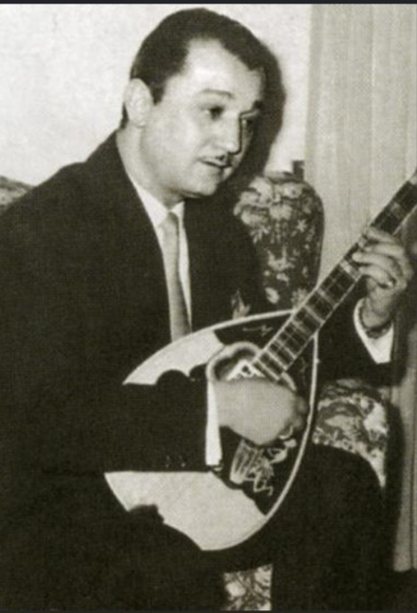

Ο Πρωτοπόρος Δεξιοτέχνης και Αναμορφωτής του Μπουζουκιού (1921 – 1970)

Ο Μανώλης Χιώτης γεννήθηκε στη Θεσσαλονίκη το 1921. Ξεκίνησε το μουσικό του ταξίδι σε πολύ μικρή ηλικία, πιάνοντας αρχικά στα χέρια του μαντολίνο και στη συνέχεια κιθάρα, καθώς αυτά τα όργανα υπήρχαν πιο εύκολα γύρω του. Ωστόσο, η μεγάλη του αγάπη γεννήθηκε όταν ήρθε σε επαφή με τον ήχο του μπουζουκιού. Γοητευμένος απόλυτα από τις δυνατότητές του, αφοσιώθηκε σε αυτό με τρομερό ζήλο.
Αρχικά, όπως όλοι οι μουσικοί της εποχής, έπαιζε το κλασικό τρίχορδο μπουζούκι. Η ασύλληπτη δεξιοτεχνία του και η ανάγκη του να ερμηνεύσει πιο περίπλοκες συγχορδίες τον οδήγησαν στη μεγαλύτερη τομή του: οραματίστηκε ένα όργανο που θα πάντρευε τις δυνατότητες της κιθάρας με το μπουζούκι. Απευθύνθηκε στον κορυφαίο οργανοποιό της εποχής, τον Ζοζέφ (Ζοζέφ Τερζιβασιάν), και μαζί κατασκεύασαν το πρώτο **τετράχορδο (8-χορδο) μπουζούκι** με πιο πλατύ μανίκι και νέο κούρδισμα, αλλάζοντας για πάντα τα δεδομένα της ελληνικής μουσικής.
Ο Χιώτης δεν έμεινε ποτέ στάσιμος στα στενά όρια του παραδοσιακού ρεμπέτικου. Πήρε τη λαϊκή μουσική και την πάντρεψε με εξευγενισμένες, μοντέρνες ενορχηστρώσεις, μαγεύοντας το κοινό. Συνεργάστηκε με κορυφαίους συνθέτες (όπως ο Μίκης Θεοδωράκης στα «Επιφάνεια») και ερμήνευσε αθάνατες επιτυχίες πλάι στη σύζυγό του, τη σπουδαία ερμηνεύτρια Μαίρη Λίντα. Έφυγε από τη ζωή πρόωρα το 1970, αφήνοντας πίσω του μια ανεκτίμητη παρακαταθήκη.
«Όταν ο Χιώτης έπιανε το μπουζούκι στα χέρια του, τα δάχτυλά του πετούσαν. Ήταν μάγος του οργάνου, ένας αληθινός βιρτουόζος παγκόσμιας κλάσης.»